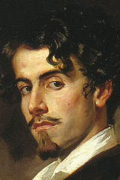

Gustavo Adolfo Bécquer
Pseudónimo utilizado por Gustavo Adolfo Cláudio Domínguez Bastida
(Sevilla, 17 de febrero de 1836 - Madrid, 22 de diciembre de 1870).
Fue un poeta y narrador español, perteneciente al movimiento del Romanti-cismo tardío. Aunque en vida ya alcanzó cierta fama, solo después de su muerte y tras la publicación del conjunto de sus escritos alcanzó el prestigio que hoy se le reconoce.
Su obra más célebre son las Rimas y Leyendas. Los poemas e historias inclui-dos en esta colección son esenciales para el estudio de la literatura hispana, sobre la que ejercieron posteriormente una gran influencia.
